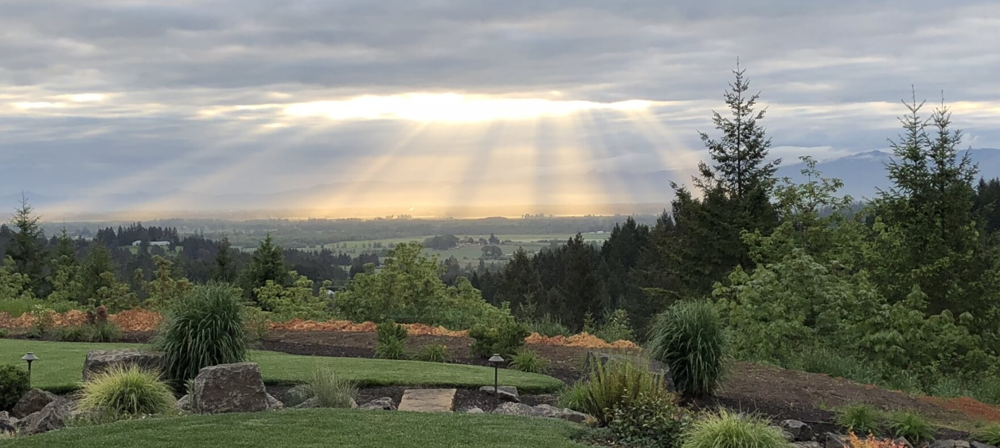

we are upword
Our team is here to serve you and make sure everything is looking up.

Meet the team
Sara Kokkeler
Sara was born in St. Charles, Missouri. Having moved several times during her childhood, her family settled in Hillsboro, Oregon, when she was eight years old. She attended high school in Eugene, graduating with honors. Her lifelong passion for assisting the underprivileged led her to work as a classroom assistant with developmentally disabled children. Afterward, having married a Naval Officer, she moved with him across the country, and they started a family. She is currently the mother of four children and is deeply fulfilled by creating order out of chaos. Having assisted in office management at a Commercial Agricultural Producer, she is well suited for her position at Upward. She enjoys skiing, sledding, boating, rafting, baking, campfires, and spending time with family in her rare free time.Cody Kauffman
Cody was born and raised in Junction City, Oregon. He graduated from JCHS, having spent as much time as possible in the wood and machine shop. During this time, he had the opportunity to travel with and assist a Grammy award-winning musician. This time allowed him to hone his outstanding customer service and relationship-building skills. Cody currently lives in Junction City with his wife, Andrea, and his sons, Asher, Ryker, and Kashton. He enjoys mechanical work, camping, and just spending time with his loved ones in his spare time.Keri Grant
Keri is our plant sourcing and nursery stock manager (AKA Plant Lady). She was born and raised in central Washington but has spent her adult life in Portland and Eugene. Her first career was in the graphic arts industry, but when she burned out on the stress, she decided to retire from that and work in an industry involving plants, which was her passion. After working at a world-renowned nursery for nine years, Keri decided to go back to school to get her college degree. She graduated from OSU with honors, majoring in natural resources and forestry, focusing on plant communities and restoration. Unfortunately, Keri graduated in the middle of a recession, so she decided to make the best and started her small landscaping and design business.